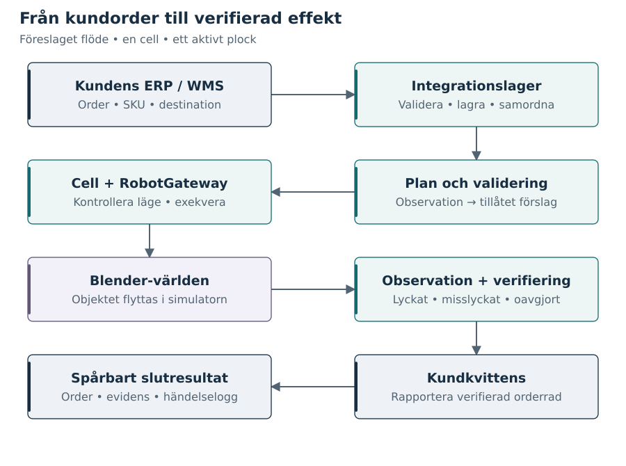

Öppna en figur i storlek som passar skärmen, eller ladda ned dess redigerbara källa. SVG-filerna är också inbäddade som vektorgrafik i PDF-rapporterna.

Figur 1. Egen konceptmodell. Ett plock passerar flera ansvar; kundstatus ändras först efter observerad effekt och hanterad kvittens. Pilarna visar informations- och exekveringsflöde, inte verkliga SICS-gränssnitt.
Figur 2. Egen komponentarkitektur. Integrationskärnan äger uppdraget; Blender äger simulatortillståndet. Verifiering lagras och återkopplas till kunden. Dubbelriktade pilar anger begäran/svar eller läsning/återkoppling, inte gemensamma transaktioner. Celltillåtelse är här en logisk emulering. Windows desktop owns its local API and Blender process lifetime; durable journals survive window closure. The human 3D view reads saved starting scenes, audit events and recorded Blender poses, including stationary blocked scenarios. It is not sensor evidence and has no path into Verifier. Explicit fresh-scene preparation passes through a durable maintenance guard to Runtime.reset; unresolved jobs block it, and historical evidence is retained. Delivery replay concatenates original product clips by saved scene epoch and durable execution order; scenario selection changes configuration only. The Integration API routes a durable test identity to separate workflow/runtime stores. Only the active test accepts writes and restart recovery; prior worlds retain their original outcomes and replay as read-only history. Start new test creates a separate world, never resolves the previous command (ADR 0007). The dark UI next-step guide reads persisted job and verification records and directs attention to the original pick; navigation and replay cannot verify an outcome (ADR 0009).
Figure 3. SIMULATOR_DESIGN. Only reconciliation evidence resolves an unknown effect. Timeout alone never proves failure. ERP exposes the verified business outcome. Explicit operator re-observation may return REQUIRES_INTERVENTION to RECONCILING using the same command and fresh evidence. It never dispatches another pick; restart leaves intervention paused (ADR 0008).
Figur 4. Egen sekvensmodell. Effekten uppstår före kommunikationsfelet. Integrationen begär kommandostatus och observation, inte ett nytt plock. Endast tillräcklig och konsistent evidens tillåter slutförande; annars krävs fortsatt utredning. Efter otillr?cklig evidens kan operat?ren uttryckligen upprepa steg 6?9 f?r samma kommando. Varje bed?mning sparas; ingen ny plockeffekt beg?rs.
Figur 5. Egen informationsmodell. Handling ändrar världen; nästa observation återkopplas till planeringen. Driftvägen får inte obegränsat facit. Test-oraklet jämför verifierarens slutsats med simulatortillståndet. Separationen undanröjer inte gemensamma modellfel.
Figur 6. Egen behörighetsmodell. Codex och MCP kan hjälpa till med scenförfattande i en isolerad utvecklingsmiljö. Granskade och versionshanterade artefakter förs sedan till körmiljön. RobotGateway accepterar enbart det avgränsade runtime-kontraktet.
Figur 7. Egen jämförelse. Kontrakt, identiteter, felhantering och observerbarhet kan studeras i båda miljöerna. Fysik, sensorer, säkerhet och driftsvillkor kräver ny validering vid övergång till verklig utrustning. Figuren beskriver ingen intern SICS-arkitektur.

![Systemgränser och ägarskap. Figur 2. Egen komponentarkitektur. Integrationskärnan äger uppdraget; Blender äger simulatortillståndet. Verifiering lagras och återkopplas till kunden. Dubbelriktade pilar anger begäran/svar eller läsning/återkoppling, inte gemensamma transaktioner. Celltillåtelse är här en logisk emulering. Windows desktop owns its local API and Blender process lifetime; durable journals survive window closure. The human 3D view reads saved starting scenes, audit events and recorded Blender poses, including stationary blocked scenarios. It is not sensor evidence and has no path into Verifier. Explicit fresh-scene preparation passes through a durable maintenance guard to Runtime.reset; unresolved jobs block it, and historical evidence is retained. Delivery replay concatenates original product clips by saved scene epoch and durable execution order; scenario selection changes configuration only. The Integration API routes a durable test identity to separate workflow/runtime stores. Only the active test accepts writes and restart recovery; prior worlds retain their original outcomes and replay as read-only history. Start new test creates a separate world, never resolves the previous command (ADR 0007). The dark UI next-step guide reads persisted job and verification records and directs attention to the original pick; navigation and replay cannot verify an outcome (ADR 0009).](assets/architecture.svg)